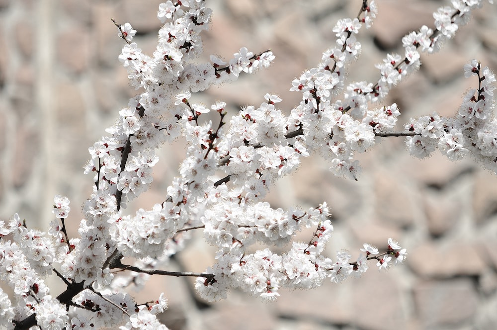
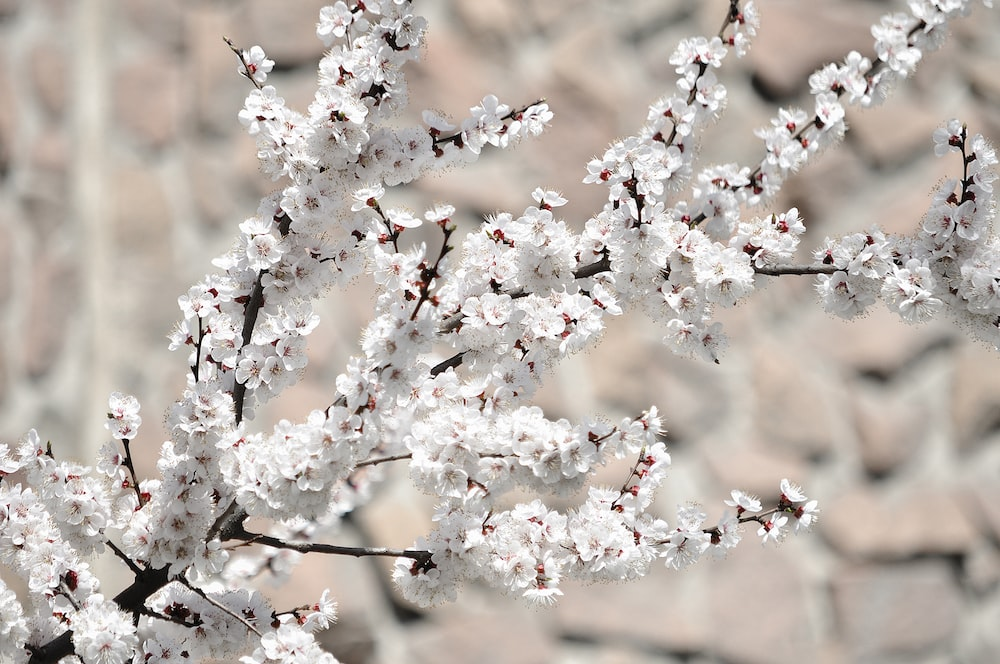

Весна, весна! Как воздух чист!
Как ясен небосклон!
Своей лазурию живой
Слепит мне очи он.
Весна, весна! Как высоко,
На крыльях ветерка,
Ласкаясь к солнечным лучам,
Летают облака!

Здравствуй, весенняя первая травка!
Как распустилась? Ты рада теплу?
Знаю, y вас там веселье и давка,
Дружно работают в каждом yглy.
Высyнyть листик иль синий цветочек
Каждый спешит молодой корешок
Раньше, чем ива из ласковых почек
Первый покажет зеленый листок.
| Март | 31 |
| Апрель | 30 |
| Май | 31 |
 
